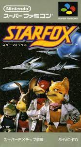
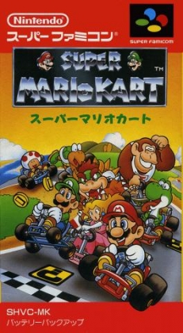
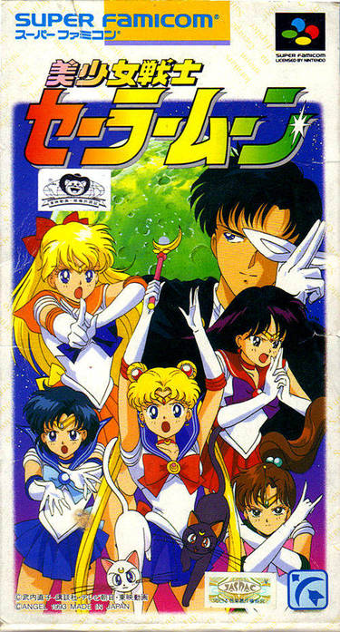
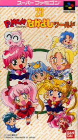
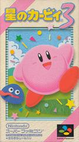

<body>
<head>
  <title>CS Super Famicom</title>
  <link rel="stylesheet" type="text/css" href="/Catalogue-S/style.css">
</head>
  <h1><i><a id="logo" href="/Catalogue-S/">カタロウーグシエラ</a></i></h1>
<center>
  <a href="starfox"></a>
  <a href="mariokart"></a>
  <a href="sailormoon"></a>
  <a href="nakayoshiworld"></a>
  <a href="kirby3"></a>
</center>
</body>
